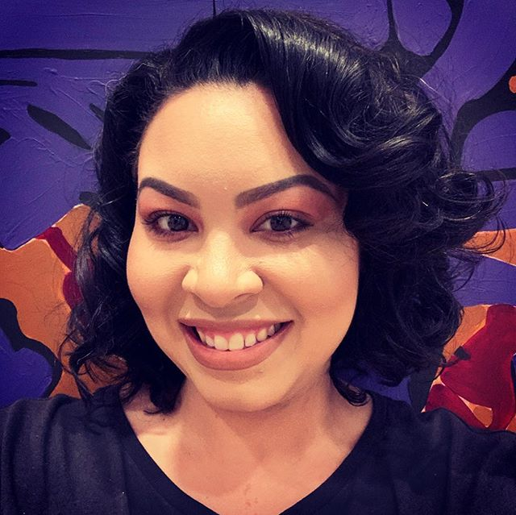

About Me
Mariel Sullivan Makeup Artistry was founded on the ideals of empowerment. Everyone should feel beautiful and empowered. I am passionate about transforming lives through the art of makeup. I am a professional makeup artist in New York City and love the work I get to do each and every day.